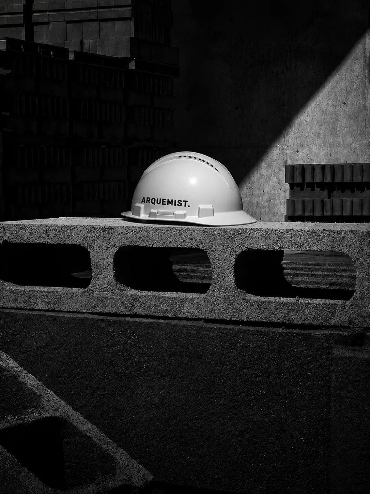
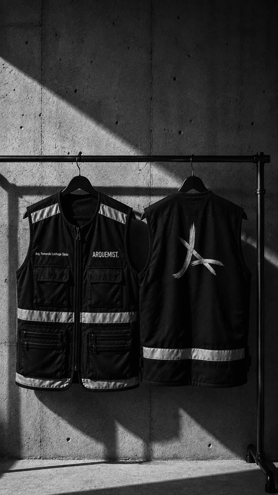
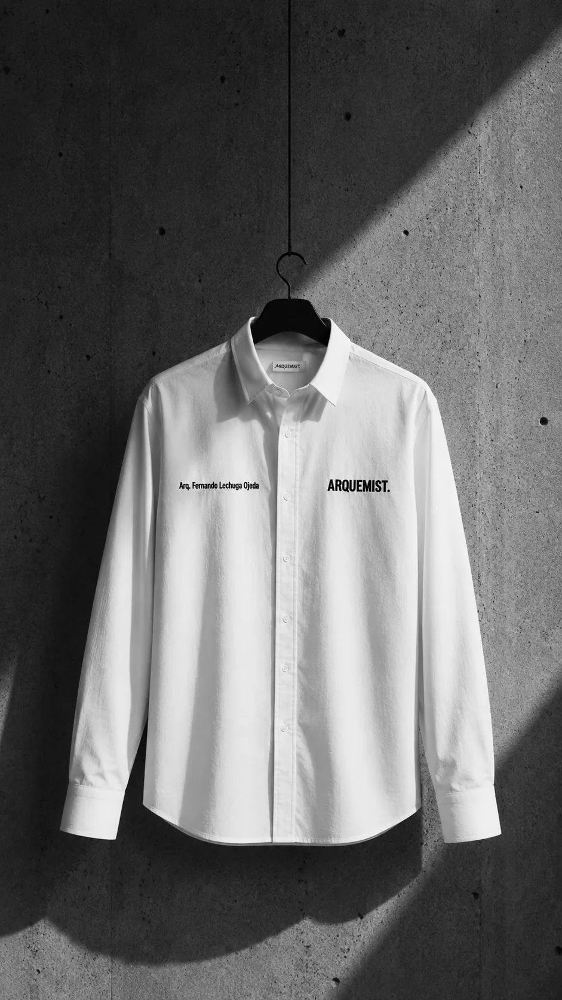

Estudio
¿Quiénes somos?
ARQUEMIST. es un estudio de arquitectura y diseño que nace de una convicción: los espacios tienen el poder de transformar la manera en que vivimos, sentimos y nos relacionamos con el mundo.
Entendemos la arquitectura como un encuentro entre el arte, la técnica y la sensibilidad humana. Un proceso de exploración en el que las ideas se convierten en materia, las necesidades en posibilidades y los espacios en experiencias.
No creemos en una arquitectura limitada a la construcción de edificios. Creemos en una arquitectura que cuestiona, que experimenta, que dialoga con su entorno y que encuentra belleza incluso en lo cotidiano.
Cada proyecto representa una oportunidad para reinterpretar lo existente, descubrir nuevas posibilidades y crear algo que trascienda su función.
Somos ARQUEMIST. Transformamos ideas en espacios y espacios en experiencias.
Identidad
-

-

-

-

Misión
Transformar el espacio a través de la arquitectura, el diseño y la creatividad, desarrollando proyectos que equilibren la sensibilidad artística, la funcionalidad y la responsabilidad social.
Buscamos comprender profundamente a las personas, sus necesidades y su entorno para concebir espacios con identidad, capaces de provocar emociones, mejorar la vida cotidiana y generar un impacto positivo en la sociedad.
Creemos que cada proyecto, sin importar su escala, representa una oportunidad para crear valor, despertar nuevas perspectivas y demostrar que la arquitectura puede ser mucho más que construir.
Visión
Consolidarnos como un estudio de arquitectura y diseño reconocido por su identidad creativa, su capacidad de innovación y su compromiso con las personas.
Aspiramos a trascender las fronteras de la arquitectura convencional, explorando nuevas formas de expresión mediante el arte, el diseño, la investigación y la experimentación.
Nuestra visión es construir una práctica arquitectónica con proyección nacional e internacional, donde cada proyecto contribuya a transformar su entorno, enriquecer la experiencia humana y dejar una huella significativa en la sociedad.
Queremos que ARQUEMIST. sea más que un estudio: una forma de entender, cuestionar y transformar el mundo a través del espacio.
Nuestra filosofía
La arquitectura es el arte de transformar.
No solamente materiales en edificios, sino ideas en experiencias, necesidades en oportunidades y espacios en lugares que adquieren significado.
Creemos que el verdadero valor de la arquitectura no reside únicamente en lo que construimos, sino en aquello que somos capaces de provocar a través de ella.
Pilares
-
01
Creatividad sin fórmulas
Cada proyecto merece una respuesta propia. No diseñamos a partir de soluciones repetidas, sino de ideas que nacen de comprender y cuestionar.
-
02
Arquitectura humana
Ponemos a las personas en el centro del diseño. La arquitectura debe servir, emocionar, incluir y mejorar la vida.
-
03
Arte y experimentación
Exploramos materiales, formas, conceptos y disciplinas para descubrir nuevas posibilidades de expresión.
-
04
Rigor y materialización
Una buena idea también debe poder construirse. Combinamos visión creativa, conocimiento técnico y atención al detalle.
-
05
Compromiso con nuestro entorno
Entendemos la arquitectura como una responsabilidad social y ambiental. Buscamos generar un impacto que trascienda cada proyecto.


Arquitectura + alquimia = ARQUEMIST.
¿Por qué ARQUEMIST.?
ARQUEMIST. nace de la unión de dos conceptos: arquitectura y alquimia.
Desde tiempos antiguos, la alquimia ha representado la búsqueda de la transformación: el deseo de convertir la materia ordinaria en algo extraordinario.
Encontramos en esa filosofía una analogía con nuestra manera de entender la arquitectura.
Así como el alquimista estudia, experimenta y transforma la materia, el arquitecto interpreta las necesidades, explora las posibilidades del espacio y convierte las ideas en realidades tangibles.
Para nosotros, cada proyecto es un proceso alquímico en el que el arte, la ciencia, la técnica y la sensibilidad humana convergen para dar origen a algo nuevo.
No buscamos transformar el plomo en oro, sino transformar espacios en experiencias, materiales en emociones e ideas en lugares con significado.
De ahí nace nuestro nombre. De la convicción de que la verdadera riqueza de la arquitectura no está únicamente en lo que construimos, sino en aquello que logramos transformar.